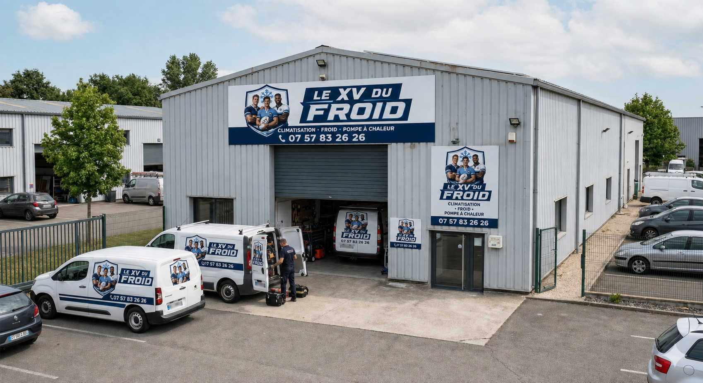
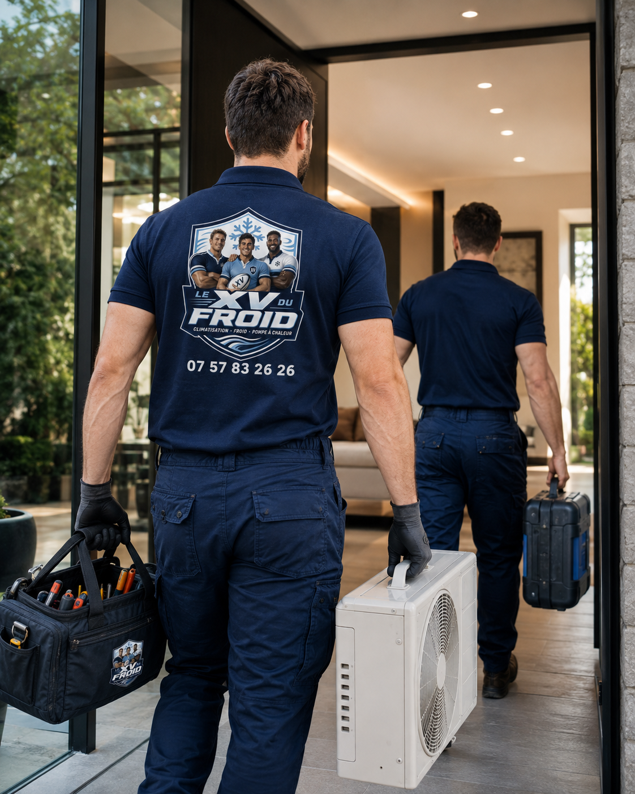
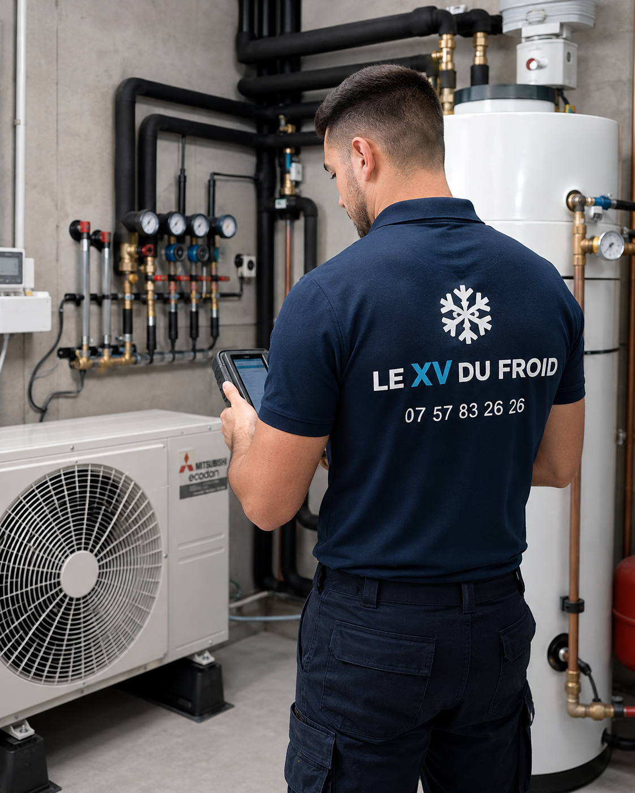
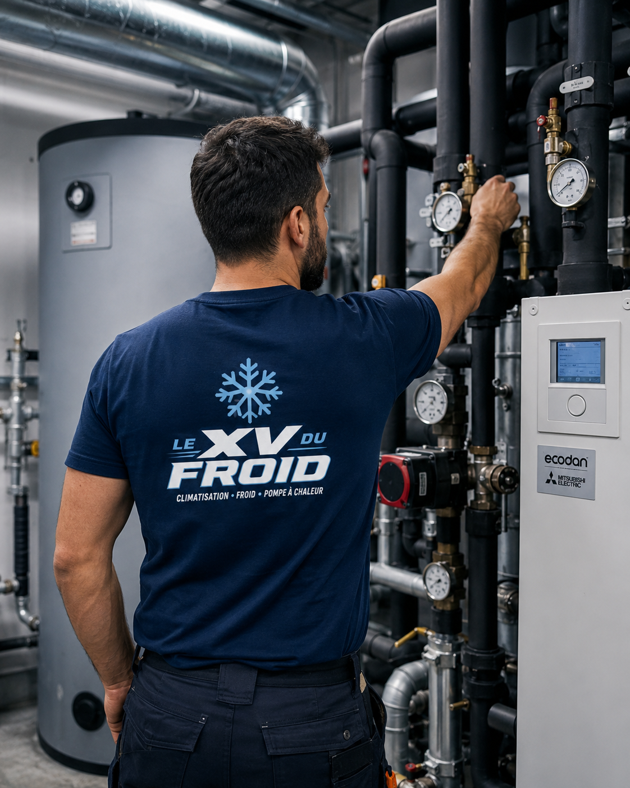

On prend le temps de comprendre votre demande avant de proposer une solution.
Climatisation Paris & Île-de-France
Le XV du Froid, votre spécialiste climatisation en Île-de-France
Chez Le XV du Froid, la climatisation est traitée avec sérieux, de l’installation au dépannage jusqu’à l’entretien régulier. Nous intervenons chez les particuliers, dans les commerces, les bureaux et les locaux professionnels. Notre méthode : écouter votre besoin, contrôler l’existant, puis vous présenter une solution claire avant toute intervention.
- Diagnostic sur place
- Devis clair avant travaux
- Essais avant notre départ

Nous travaillons sur les principales marques et les configurations les plus répandues.
Vous savez ce qui est prévu, pourquoi c’est nécessaire et à quel tarif.
Chaque intervention se termine par des contrôles, des essais et des conseils d’utilisation.
Accueil
Notre métier : du froid fiable, posé avec méthode.
Une climatisation doit être confortable, silencieuse et compréhensible à utiliser. Notre rôle est simple : poser juste, dépanner sans hasard et entretenir avant que les petites alertes deviennent de vraies pannes.
Le XV du Froid intervient dans les logements, bureaux, commerces et locaux professionnels pour le froid l’été, le chauffage réversible, l’entretien annuel et les pannes bloquantes. Notre priorité : expliquer avant d’agir, puis tester avant de partir.
- Explications simples avant toute intervention
- Techniciens qualifiés et ponctuels
- Devis détaillé, sans engagement
- Lieu protégé, zone rangée après travaux
Nos prestations
Installation, dépannage, entretien : chaque intervention a sa méthode.

01
Installation
Installer une climatisation adaptée au lieu
Surface, exposition, isolation, emplacement des unités, bruit, condensats : la pose se prépare avant le devis. L’objectif est une clim efficace, discrète et facile à entretenir.
Découvrir l’installation
02
Dépannage
Dépanner avec un diagnostic, pas au hasard
Manque de froid, fuite d’eau, bruit, code erreur ou arrêt complet : on cherche la cause, on explique la panne et on annonce la réparation avant d’agir.
Découvrir le dépannage
03
Entretien
Entretenir pour éviter les pannes bêtes
Filtres, condensats, soufflage, odeurs, essais chaud/froid : un entretien régulier évite les pertes de performance, les écoulements et les mauvaises odeurs.
Découvrir l’entretien
04
Mise en service
Mettre en service proprement dès le départ
Raccordements, évacuations, essais chaud/froid et réglages : une clim bien mise en service donne moins de soucis ensuite.
Voir la mise en serviceToutes marques
Des interventions sur les principales marques de climatisation.
Daikin, Mitsubishi Electric, Atlantic, Toshiba, Panasonic, LG, Samsung et d’autres : on retrouve ces machines en appartement, maison, boutique et bureau.
DaikinMitsubishi ElectricAtlanticToshiba
HitachiPanasonicLGSamsung
AirwellFujitsuHeiwaTechnibel
DaikinMitsubishi ElectricAtlanticToshiba
HitachiPanasonicLGSamsung
AirwellFujitsuHeiwaTechnibel
Notre métier
Ce qu’on fait vraiment sur le terrain.

01Dépannage clim
Une clim qui souffle chaud, qui fuit, fait du bruit ou affiche un code erreur doit être contrôlée rapidement. On vérifie l’alimentation, l’état des filtres, l’évacuation des condensats, les unités intérieures et extérieures, puis on explique la panne avant toute réparation.

02Installation
Une bonne installation commence par le dimensionnement. Surface, isolation, exposition, nombre de pièces, emplacement des unités et niveau sonore : chaque détail compte pour obtenir un confort durable et éviter une machine qui force inutilement.

03Entretien
L’entretien régulier limite les mauvaises odeurs, les pertes de performance et les pannes en pleine chaleur. On nettoie les éléments accessibles, contrôle les écoulements, testons les modes et signalons les points faibles avant qu’ils deviennent bloquants.
04
Remplacement
Quand un appareil devient trop bruyant, trop ancien ou trop coûteux à réparer, on propose une solution cohérente avec votre logement ou votre local. L’objectif n’est pas de vendre plus gros, mais d’installer juste.
En intervention
Des interventions concrètes, pas des promesses vagues.


Méthode
Une façon de travailler claire, du premier échange aux essais.
On commence par comprendre le problème, puis on contrôle. Si un nettoyage suffit, on le dit. Si une pièce doit être changée, vous savez laquelle et pourquoi.
Échange
Votre besoin, les symptômes, la marque et les contraintes d’accès.
Contrôle
Inspection de l’installation, tests et recherche de la cause réelle.
Accord
Travaux expliqués, tarif annoncé, validation avant intervention.
Mise en service
Réparation ou pose, essais, réglages et conseils pratiques.
Signes à surveiller
Quand faut-il faire intervenir un technicien ?
Certains signes paraissent anodins au début, mais ils annoncent souvent une panne plus sérieuse. Une climatisation qui perd en puissance, qui coule, qui sent mauvais ou qui démarre difficilement doit être contrôlée avant que le problème s’aggrave.
Air moins froid
Filtres encrassés, manque de fluide, défaut de ventilation ou unité extérieure obstruée.
Fuite d’eau
Condensats mal évacués, bac bouché, pente incorrecte ou entretien insuffisant.
Bruit inhabituel
Vibration, pièce usée, fixation à reprendre ou ventilateur à contrôler.
Mauvaise odeur
Encrassement, humidité stagnante ou nettoyage complet à prévoir.
Pour qui, et où
Des interventions adaptées, partout où vous en avez besoin.
Appartement, maison, boutique, bureau, restaurant ou local technique : nous adaptons notre intervention à l’usage réel du lieu. Une chambre, un commerce ouvert au public et un bureau occupé toute la journée ne se règlent pas de la même façon. Nous intervenons rapidement sur Paris et l’Île-de-France, pour un projet d’installation, une visite d’entretien programmée ou une panne à traiter dans la journée.
- Pose de climatisation réversible mono-split et multi-split
- Remplacement d’anciens appareils énergivores
- Maintenance préventive et contrat d’entretien
- Dépannage rapide en cas de panne ou fuite d’eau

Nos zones
Intervention climatisation à Paris et dans toute l’Île-de-France.
Nous intervenons sur Paris, les départements franciliens et les villes proches : dépannage, entretien, installation et remplacement de climatisation.
Questions fréquentes
Ce que l’on nous demande le plus souvent.
Avant d’appeler, beaucoup de clients se posent les mêmes questions. Voici les réponses les plus utiles pour préparer votre demande.
Intervenez-vous pour les pannes bloquantes ?
Oui, les pannes bloquantes sont traitées en priorité. Pour les installations et les visites d’entretien, nous convenons ensemble d’un créneau qui vous arrange.
Le devis est-il vraiment gratuit ?
Oui, systématiquement. Nous établissons un devis clair avant toute réparation ou installation, et rien n’est engagé sans votre accord.
Travaillez-vous sur toutes les marques ?
Oui. Nous installons, entretenons et réparons les climatisations des principales marques du marché, quel que soit le modèle ou l’ancienneté de l’appareil.
Intervenez-vous chez les professionnels ?
Oui, nous équipons aussi bien des logements que des commerces, bureaux et locaux techniques, en adaptant l’intervention pour limiter l’impact sur l’activité.

Contact
Un projet ou une panne de climatisation ?
Expliquez-nous votre besoin. Nous vous orientons vers la solution la plus simple.
07 57 83 26 26 Nous contacter par écrit